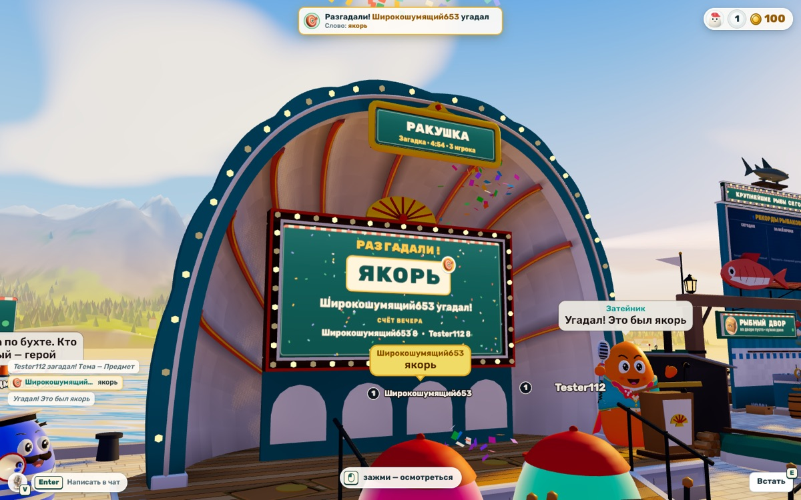
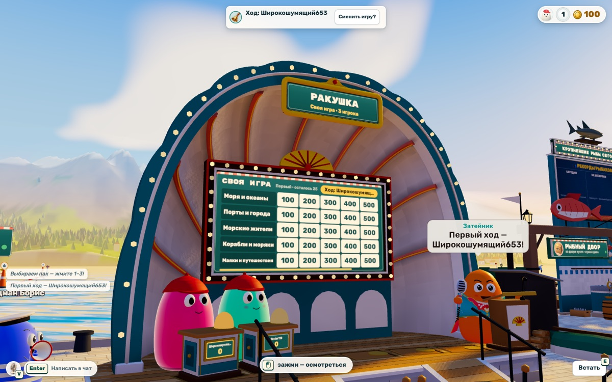
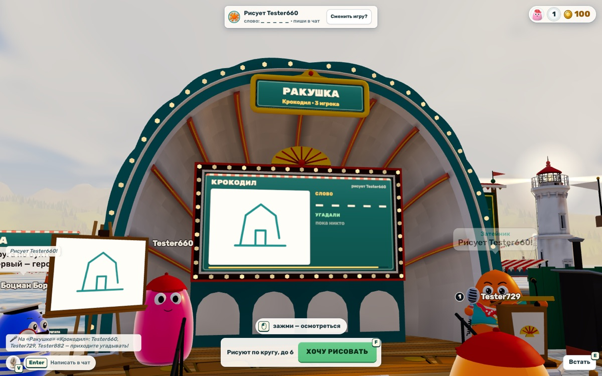
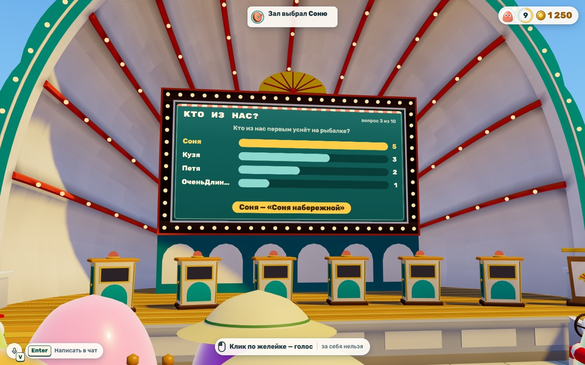

Паузы. Между загадками — до минуты, между играми — около 40 с. В это время все сидят и ждут одного.
Что предлагаю
Убрать паузы и лишние шаги, оживить четыре игры, дать дело зрителям. Первой новой игрой взять «Смешнее всех» — в ней играют все сразу.
Что нужно от тебя
Отметь идеи кнопкой «Беру» (рекомендованные уже отмечены) и пришли список снизу. Или просто напиши «бери рекомендованное».
Как сейчас

«Загадка»
Один загадал слово, остальные пишут догадки, он отмечает «тепло», «мимо» или «угадал». 5 загадок или 15 минут.
Живая: догадки облачками, «Тепло» слева сверху помогает угадывать.
Между загадками до минуты ожидания. Загадывающий один разбирает все строки. Угадавший обязан загадывать сам.

«Своя игра»
Табло тем и цен, пульты, кнопка на Пробел. Ведёт Затейник или игрок. Один раунд пака и финал.
Настоящая телеигра: честная кнопка, паки SIGame, финал со ставками.
25 вопросов — 15–20 минут. Зрителям нечего делать. Затейнику отвечают только текстом.

«Крокодил»
Рисуешь слово на мольберте, остальные угадывают в чате. До 6 рисунков.
Лучший темп: угадывают все сразу, рисунок видно с набережной.
Нет заливки — большие места закрашиваются штрихами. Рисунок пропадает сразу после итога.

«Кто из нас?»
Вопрос на табло, тайный голос кликом по желейке, лидер получает титул. 10 вопросов.
Играют все сразу, есть свои вопросы — самая «компанейская» игра.
Только от 4 человек. Титул живёт до конца игры. 60 встроенных вопросов быстро начнут повторяться.
Снимки — из собранной игры на приёмке 30.10. «Кто из нас?» снят на прошлой, большой сцене: интерфейс тот же.
Где игроки ждут
Время по настоящим числам из кода. играешь, ждёшь — в том числе голосование и итоги. Сама игра на рисунке обрезана до 40 с.
Что мешает
12345Момент разгадки: «якорь» сразу в пяти местах — плашка, табло, облачко, Затейник и чат.
Паузы. Между загадками до 62 с, между играми ~40 с, перед «Своей игрой» с живым ведущим — до 90 с выбора пака.
Один делает — остальные ждут. Загадывающий разбирает все строки сам; в «Своей игре» ход у одного, а зрители только смотрят.
Повторы на экране. Одно и то же в пяти местах (на снимке) — правило игры «одна информация — в одном месте».
Мало своего. 3 встроенных пака «Своей игры» (по раунду на игру), 60 вопросов «Кто из нас?», 310 слов «Крокодила» — компании хватит на несколько вечеров.
Малый состав. Вдвоём нет жетонов, «Кто из нас?» — от 4 человек, одному делать нечего.
«Своя игра» долгая: раунд — 15–20 минут.
Идеи
Нажми на карточку — она отметится «Беру». Часы — грубая оценка работы, без проверки.
Как это будет выглядеть
Соня — 1-е место · 14 очков«Крокодил» · ещё раз: 2 из 3
A1 «Ещё раз!». На итогах — одна кнопка. Большинство нажало — та же игра сразу, без голосования и ролей.
Строки зала
Кузяэто едят?Горячо!
Петяоно живёт в море?Тепло
Соняэто рыба?
1 по «тёплой» строке ещё раз — «Горячо!»
C1 «Горячо!». Третья ступень между «тепло» и «угадал». Строка встаёт первой в «Тепло» и крупно на табло.
Отвечает Петя · «Моря и океаны», 300Зал тоже отвечает — тайно
EnterТвой ответ залу
Зал знал: 7 из 11Ты тоже угадал — лучший зритель покажется в итогах
C3 «Зал отвечает». Зрители в креслах тоже играют: пишут ответ, пока отвечает игрок за пультом.
Смешнее всехвопрос 2 из 5
Что Дед Семён делает с рыбой, которую никто не купил?
Читает ей сказки на ночьКузя · 3
Продаёт её обратно СанеСоня · 5
Отпускает и машет платочкомПетя · 1
Учит её ловить рыбаковОля · 2
голос — клик или 1–4 · за себя нельзя
D1 «Смешнее всех». Ответы приходят без имён, зал голосует, потом раскрываем авторов. На снимке — уже раскрытие.
Предлагаю по шагам
«Без пауз» — A1–A5. Паузы между загадками с минуты до ~10 с, между играми — с ~40 до ~12 с. ≈ 1,5 дня работы
«Живее» — C1, C6, C7, C9, E1, E2: «Горячо!», заливка и повтор рисунка, титулы на вечер, аплодисменты, «Позвать». ≈ 1,5 дня
«Зрителям и компании» — C3, F1, F2: «Зал отвечает», больше встроенных вопросов, «Пак компании». ≈ 1,5 дня
Новая игра «Смешнее всех» — сначала страница-лаборатория, после твоего «да» — в игру. ≈ 2 дня
Шаги 1–3 идут параллельно — около двух дней вместе с проверкой втроём. Интерфейс (группа B) — вместе с редизайном HUD. Всё — за флагом, на сайт только с твоего «да».
Вопросы
Берём шаги 1–3?Да, все (рекомендую) · Выберу по номерам · Только «Без пауз»
Какую новую игру первой?«Смешнее всех» (рекомендую) · «Испорченный телефон» · «Угадай по силуэту» · Пока не надо
Жетоны вдвоём?Половину: 4 🪙 в минуту (рекомендую) · Оставить «от трёх»
Интерфейс «Ракушки»?Вместе с редизайном HUD (рекомендую) · Отдельно сейчас